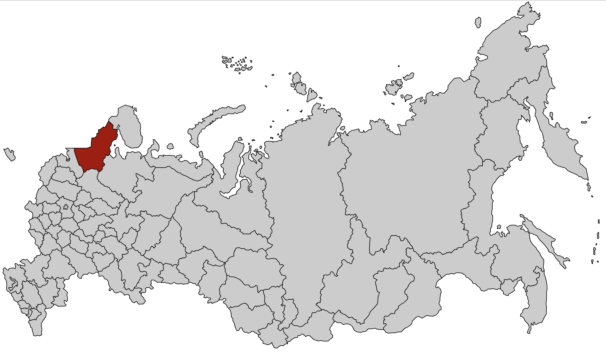
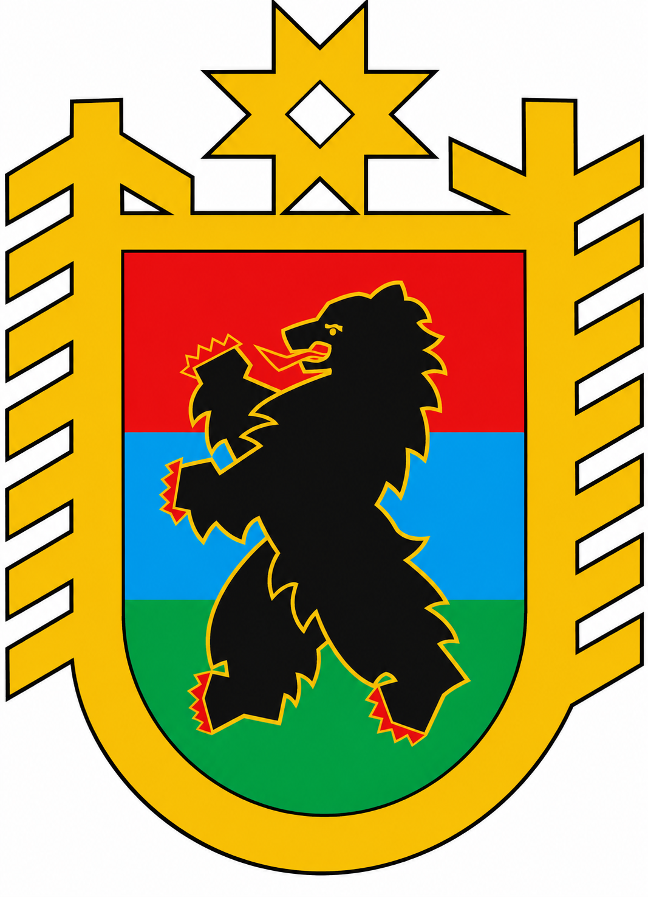

Сезон 2011 - пгт. Лоухи
Место выезда

Нашивка

Командный состав
- Командир — Харченко Олеся
- Комиссар — Карпов Александр
Бойцы
- Бессараб Михаил
- Бенюков Сергей
- Бухарев Александр
- Вильчинский Дмитрий
- Винцаревич Артём
- Галомзик Павел
- Гамбарян Эдуард
- Глушаков Василий
- Захаров Антон
- Исенко Максим
- Кузнецкий Роман
- Макаров Роман
- Ожегов Михаил
- Пахарева Ольга
- Пронин Денис
- Рябков Тимофей
- Сиротин Александр
- Снегирев Николай
- Чернобылов Василий
- Чернов Дмитрий
- Черногор Константин
- Щетинский Александр
О сезоне
Работодатель: ЗАО "ЭФЭСк".
Объект: 2-я цепь Кольско-Карельского транзита Пгт. Лоухи.
Виды работ: возведение насыпей под ЛЭП.
После окончания сезона Александр Карпов и ребята из Политеха образовали ССО "Сковорода" и остались в Политехе, а ССО "Монолит" переехал в ЛЭТИ.
Фотоальбом